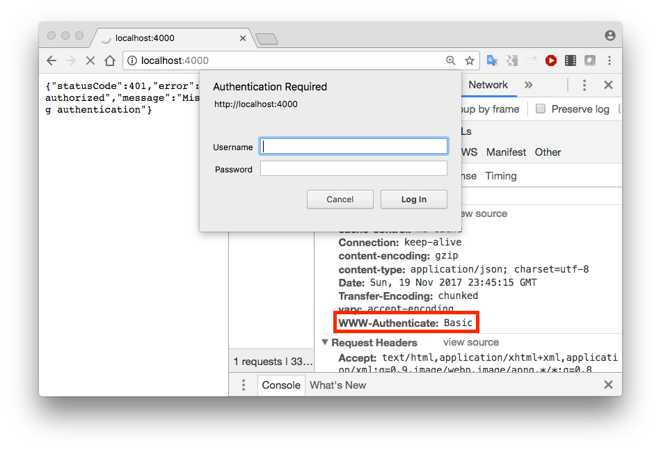
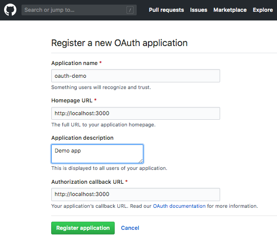
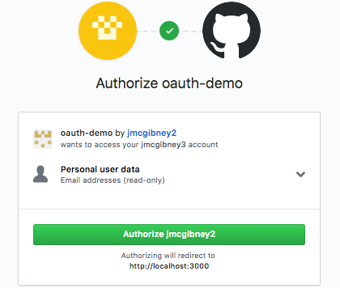

Objectives
In this lab, we will walk through some examples in class of how to add various authentication-related features to a web application. You may adapt these for the purposes of your web application security assignment report. In particular we will examine:
- Password hashing & salting
- HTTP Basic authentication
- Using OAuth
Password hashing & salting
The bcrypt module provides password hashing and salting.
When registering a new user or changing password, convert the supplied password to a hashed and salted version with bcrypt.hash. We can do it using async:
saltRounds = 10 # this can be tuned to control time to hash
hash = await bcrypt.hash(plaintextPassword, saltRounds);
// Store hash in DB instead of password.To check a password entered by a user against the stored value, read the stored value (called hash here) and compare with bcrypt.compare. Again we can use async:
const isMatch = await bcrypt.compare(candidatePassword, this.password);
// Check isMatch (boolean) and act accordinglyThis edited version of the accounts.js controller from the final version of donation-web implements this for user registration.
This edited version of the user.js model from the final version of donation-web implements this for authenticating the user (i.e. checking entered password).
Note that any database initialisation you have will also need to be updated - see new version of initdata.json. These were populated with values created with an online bcrypt calculator.
The lecture notes contain some background on password hashing and salting.
You can get the final version of donation-web with the following command:
git clone https://github.com/wit-hdip-comp-sci-2018/donation-web.gitThen overwrite app/controllers/accounts.js with the version of accounts.js linked in Resources below. Likewise overwrite app/models/user.js with the version of user.js linked in Resources below. Likewise overwrite app/models/initdata.json with the version of initdata.json linked in Resources below.
Start mongod in a new terminal
sudo mongodThen you should be able to run the app and see hashed and salted passwords
cd donation-web
npm install
node index.jsExercise
The donation app also allows passwords to be changed. Edit accounts.js to do this properly using Bcrypt. Look for this line in updateSettings:
user.password = userEdit.password; // EXERCISE -- change this to use bcryptResources
HTTP Basic Authentication demo
This code demonstrates HTTP Basic Authentication using the hapi-auth-basic module
Required modules: hapi, bcrypt, hapi-auth-basic
const Bcrypt = require('bcrypt');
const Hapi = require('hapi');
const users = {
john: {
username: 'john',
password: '$2a$10$iqJSHD.BGr0E2IxQwYgJmeP3NvhPrXAeLSaGCj6IR/XU5QtjVu5Tm', // 'secret'
name: 'John Doe',
id: '2133d32a'
}
};
const validate = async (request, username, password, h) => {
if (username === 'help') {
return { response: h.redirect('https://hapijs.com/help') }; // custom response
}
const user = users[username];
if (!user) {
return { credentials: null, isValid: false };
}
const isValid = await Bcrypt.compare(password, user.password);
const credentials = { id: user.id, name: user.name };
return { isValid, credentials };
};
const main = async () => {
const server = Hapi.server({ port: 3000 });
await server.register(require('hapi-auth-basic'));
server.auth.strategy('simple', 'basic', { validate });
server.auth.default('simple');
server.route({
method: 'GET',
path: '/',
handler: function (request, h) {
return 'welcome';
}
});
await server.start();
return server;
};
main()
.then((server) => console.log(`Server listening on ${server.info.uri}`))
.catch((err) => {
console.error(err);
process.exit(1);
});To run this, save this program (basic.js) to a new folder and run:
npm install hapi bcrypt hapi-auth-basic node basic.js
Now open a new browser tab and go to Developer Tools (right click and Inspect in Chrome). Select the Network tab and browse to http://localhost:3000.
Observe that a WWW-Authenticate:Basic Response Header is set. 
Entering the correct username and password (john/secret) sets an Authorization header in all requests to that domain until the browser is closed. Note that this the username and password are just encoded and not encrypted.

Try any online Base64 decoder to find what am9objpzZWNyZXQ maps to.
Using OAuth
This demo application uses the bell plugin for OAuth to enable users of the app to get privileged access to their GitHub account. This could be adapted for other supported services such as Facebook, Google, LinkedIn, Foursquare, etc.
To try out the application, you need to do the following:
Log into your GitHub account and go to the Settings page.
Go to Developer Settings and Register a new application.
Complete the form to give the app a name and define Homepage and Callback URLs (which can be http://localhost:3000/ for example). 
Note the Client ID and Client Secret assigned to your app, You will need to insert these into the code at the designated placeholders.
Download the demo code and package.json file, extract from the zip archive and go to that folder. The code is also shown at the bottom of this page.
- A full explanation of what is going on here is provided in this tutorial from Sitepoint.
Start the server
npm install node oauth-github.jsNow try to visit the app's login route:
-
You will be redirected from your app to GitHub to authorise giving the web app access to your data. You will also need to authenticate to GitHub if you're not already logged in. 
-
Try the following routes and see what happens. Experiment with logging out and subsequently trying to get access.
oauth-github.js
'use strict';
const os = require('os');
os.tmpDir = os.tmpdir;
const Hapi = require('hapi');
const Bell = require('bell');
const AuthCookie = require('hapi-auth-cookie');
const main = async () => {
const server = Hapi.server({ port: 3000 });
// Register bell and hapi-auth-cookie with the server
await server.register([Bell, AuthCookie]);
var authCookieOptions = {
password: 'cookie-encryption-password-secure', // String used to encrypt auth cookie (min 32 chars)
cookie: 'demo-auth', // Name of cookie to set
isSecure: false // Should be 'true' in production software (requires HTTPS)
};
server.auth.strategy('cookie-auth', 'cookie', authCookieOptions);
var bellAuthOptions = {
provider: 'github',
password: 'github-encryption-password-secure', // String used to encrypt temporary cookie
// used during authorisation steps only
clientId: 'ENTER CLIENT ID', // *** Replace with your app Client Id ****
clientSecret: 'ENTER CLIENT SECRET', // *** Replace with your app Client Secret ***
isSecure: false // Should be 'true' in production software (requires HTTPS)
};
server.auth.strategy('github-oauth', 'bell', bellAuthOptions);
server.auth.default('cookie-auth');
//Set up the routes
server.route([
{
method: 'GET',
path: '/login',
config: {
auth: 'github-oauth',
handler: function (request, h) {
if (request.auth.isAuthenticated) {
request.cookieAuth.set(request.auth.credentials);
return ('Hello ' + request.auth.credentials.profile.displayName);
}
return('Not logged in...');
}
}
}, {
method: 'GET',
path: '/account',
config: {
auth: 'cookie-auth',
handler: function (request, h) {
if (request.auth.isAuthenticated) {
return(request.auth.credentials.profile);
}
}
}
}, {
method: 'GET',
path: '/userinfo',
config: {
auth: 'cookie-auth',
handler: function (request, h) {
if (request.auth.isAuthenticated) {
return('<h2>From your GitHub profile</h2>'
+ '<b>User name:</b> ' + request.auth.credentials.profile.username
+ '<br><b>Display name:</b> ' + request.auth.credentials.profile.displayName
+ '<br><b>Email address:</b> ' + request.auth.credentials.profile.email
+ '<br><b>Affiliation:</b> ' + request.auth.credentials.profile.raw.company);
}
}
}
}, {
method: 'GET',
path: '/',
config: {
auth: {
mode: 'optional'
},
handler: function (request, h) {
if (request.auth.isAuthenticated) {
return ('Hello ' + request.auth.credentials.profile.displayName);
}
return('Hello stranger!');
}
}
}, {
method: 'GET',
path: '/logout',
config: {
auth: false,
handler: function (request, h) {
request.cookieAuth.clear();
return('Logged out now!');
}
}
}
]);
// Start the server
await server.start()
return server;
};
main()
.then((server) => console.log(`Server listening on ${server.info.uri}`))
.catch((err) => {
console.error(err);
process.exit(1);
});